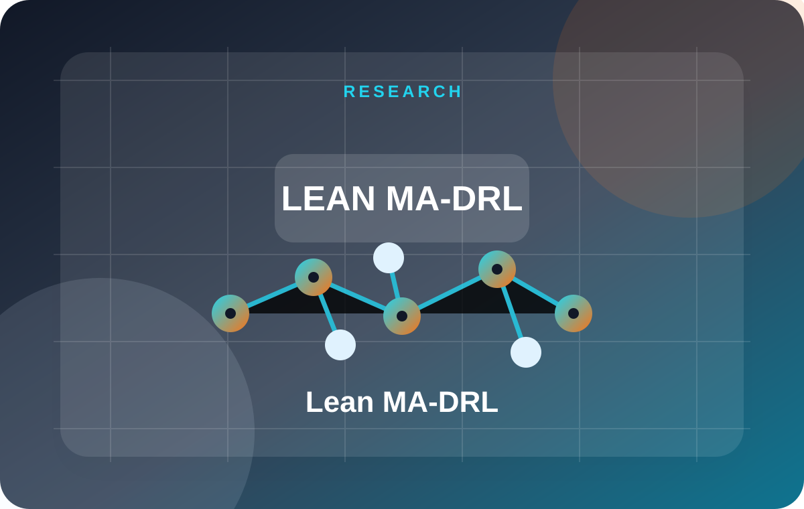

Applied Energy | 2026
Lean multi-agent deep reinforcement learning for uncertainty handling in the energy management of networked microgrids
A lean multi-agent DRL framework for networked microgrid energy management under uncertainty.
A. B. Esan, H. Shareef, and A. K. ALAhmad, “Lean multi-agent deep reinforcement learning for uncertainty handling in the energy management of networked microgrids,” Applied Energy, vol. 408, Art. no. 127354, 2026. doi:10.1016/j.apenergy.2026.127354
Lean MA-DRLNetworked microgridsUncertainty
Open DOI